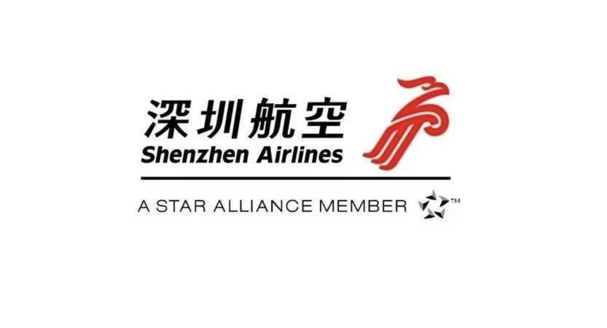
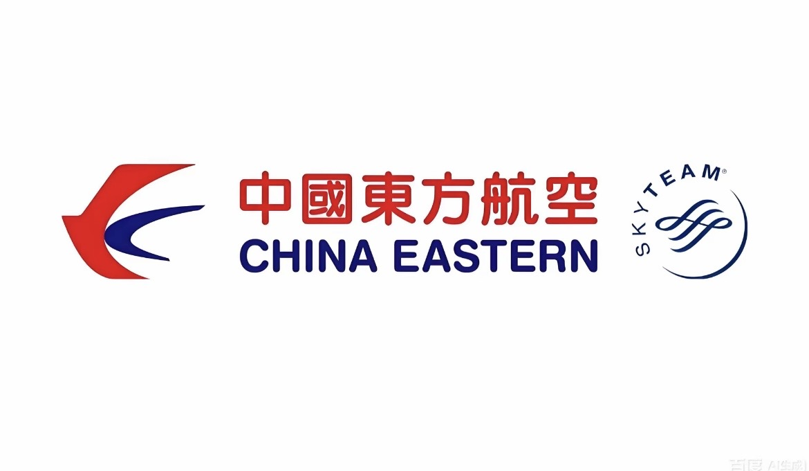
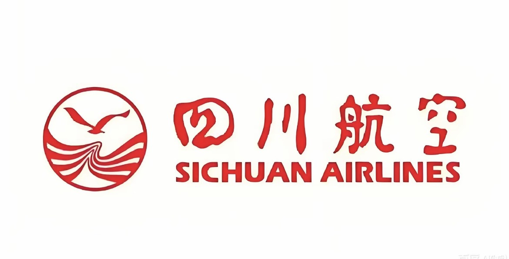
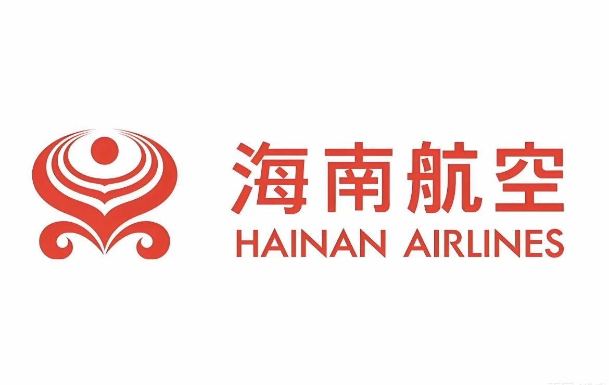
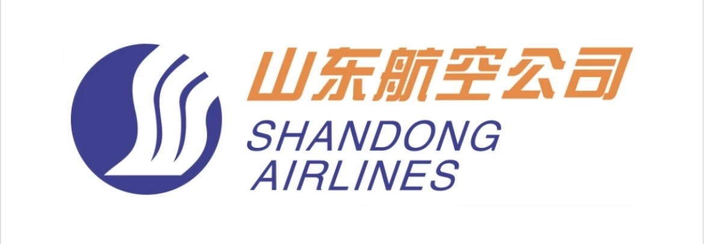

Air China
首都机场出发的
“空中快线”“精品航线”
首都机场出发的空中快线、精品航线，是各航空公司持续提升航班品质与旅客服务体验的重点航线。从京津冀出发，连接长三角、粤港澳大湾区、成渝地区、中部地区、海南自由贸易港及西北“一带一路”门户城市，以更加丰富的航班选择和更加完善的服务体验，连接重要城市群与区域经济中心。
探索全部航线7合作航空公司
13热门航点
PEK从北京出发
ROUTE NETWORK
航线查询
选择目的地，快速找到对应的航空公司与首都快线航线。
正在展示全部航线
10 条航线

Shenzhen Airlines
深圳航空

China Eastern
中国东方航空

Sichuan Airlines
四川航空

Hainan Airlines
海南航空
Loong Air
长龙航空

Shandong Airlines
山东航空
未找到相关航线
换一个城市名称试试看。
OFFICIAL AIRLINE OFFERS
官网优惠与机票预订
前往航空公司官网查看最新优惠。实际票价、航班及促销信息均以各航空公司官网实时发布为准。
AIR CHINA
官网优惠 / 机票预订 ↗
中国国际航空
前往航空公司官网查看最新优惠
SHENZHEN AIRLINES
官网优惠 / 机票预订 ↗
深圳航空
前往航空公司官网查看最新优惠
CHINA EASTERN
官网优惠 / 机票预订 ↗
中国东方航空
前往航空公司官网查看最新优惠
SICHUAN AIRLINES
官网优惠 / 机票预订 ↗
四川航空
前往航空公司官网查看最新优惠
HAINAN AIRLINES
官网优惠 / 机票预订 ↗
海南航空
前往航空公司官网查看最新优惠
SHANDONG AIRLINES
官网优惠 / 机票预订 ↗
山东航空
前往航空公司官网查看最新优惠
LOONG AIR
官网优惠 / 机票预订 ↗
长龙航空
前往航空公司官网查看最新优惠
DESTINATIONS
目的地介绍
从航线抵达城市，也从城市的地理、历史与日常开始认识下一段旅程。
TRAVEL NOTES
注意事项
提前做好准备，让旅程更轻松。
提前抵达
预留充足时间
建议国内航班起飞前至少 2 小时抵达机场，节假日请适当提前。
证件确认
随身携带有效证件
出发前检查身份证件与订票信息，确保姓名和证件号码一致。
行李准备
了解行李规定
不同航司与舱位标准可能不同，请在出发前向承运航空公司确认。